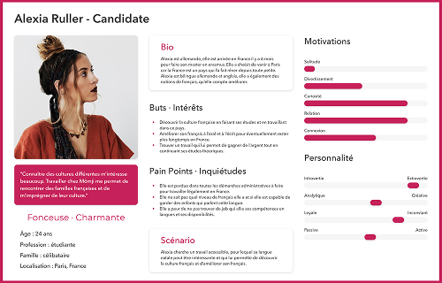
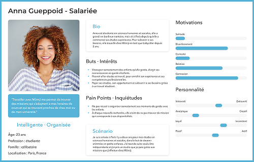
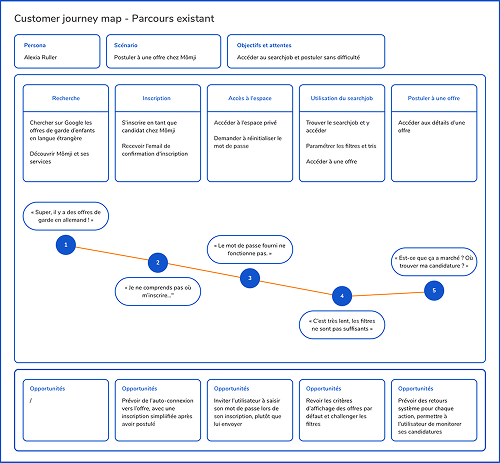
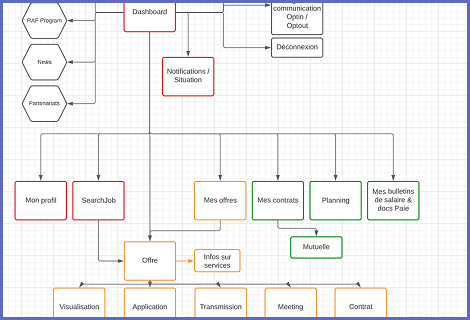

Contexte & Objectifs
Mômji met en relation des parents ayant des enfants à garder avec des nounous. Les nounous ont accès à un espace privé qui leur permet de gérer leur recherche d'emploi, leur donne accès à des informations et des ressources, et leur permet de fournir ou récupérer des documents nécessaires à leur embauche. Cependant, nous savons grâce aux retours utilisateurs que l'espace privé n'est pas assez intuitif et performant.
Permettre aux candidats de naviguer sur leur espace depuis leur smartphone
Mettre à jour les fonctionnalités vieillissantes (signature en ligne, carte interactive des offres)
Améliorer les parcours qui ne sont plus cohérents avec l'évolution des services et des besoins fonctionnels
Améliorer le taux de transformation (en augmentant le nombre de candidatures) et le taux de matching
Cette présentation a pour but de montrer le résultat global de l'espace privé des babysitters, qui lui-même adresse beaucoup de parcours différents qui ne sont pas tous détaillés ici.
Discovery
Questionnaire en ligne
Envoi d'un formulaire en ligne adressé aux candidats et aux salariés pour en apprendre plus sur leur usage et leur appréciation de l'espace privé
Observation contextuelle
Observation de plusieurs sessions de Matching on the spot (MOTS) : présentation de l'espace privé faite par un recruteur à un candidat
Personas


Experience journey map
Modélisation de la customer journey map de Alexia

Idéation
How might we
Définition des énoncés HMW avec l'équipe, basée sur les informations que nous avons recueillies
Benchmark fonctionnel
Auprès de sites concurrents et non concurrents pour trouver des idées
| Page d'accueil | Inscription | Espace candidat | Accès aux offres | Emails | Fiches de paie | Documents légaux |
|---|---|---|---|---|---|---|
| CTA "Trouvez votre baby sitter" très visible. "Voir les jobs disponibles" moins visible. Connexion / Inscription présents dans la nav | Très explicite "inscription 100% gratuite". Même formulaire pour client / intervenant. Adresse, Prénom, Nom, Téléphone, Email, Mot de passe, Parrainage | Existe, sous forme de tableau de bord. Agence, Profil, Jobs, Favoris, Parrainages, Paramètres, Aide | Juste après l'inscription, accès au tableau de bord et on peut se rendre dans la partie "Jobs". Liste + Map (pa interactive). Type d'offre, age enfant, planning, type de garde, récence, distance | Juste après l'inscription : "compte créé" + CTA espace personnel | Partie visible, mais inaccessible si pas de contrat | Partie visible, inaccessible si pas de contrat |
| Dédiée aux clients. Lien "Je cherche un emploi". Puis choix du service | Assez explicite, mais TROP longue. Enormément de champs à remplir. Mot de passe choisi par le candidat | Tableau de bord, réservation, boite de réception, mes annonces, mon compte, mes récapitulatifs, jobs favoris | Juste après l'inscription, on accède aux offres. Liste. Pour modifier sa recherche (les filtres) il faut repasser par le questionnaire d'inscription | 2 emails — "bienvenue" avec steps à faire — confirmer votre inscription via un CTA | Pas trouvé | Pas trouvé / CNI |
| Page d'accueil dédiée aux candidats. Champs de recherche : metier + région | Email. Mot de passe. Télécharger le CV. Si pas de CV : infos perso, tel, postes, profil | Pas d'accès tant que l'inscription n'est pas finalisée avec le CV | Direct après avoir utilisé la recherche. Liste. Avant de pouvoir postuler, il faut s'inscrire et avoir upload un CV ou remplir les champs d'expériences | / | — | — |
| Prio sur client, avec zone de recherche pour eux. CTA pour candidats quand même "Postuler". CTA "Jobs emplois" en haut à droite | Pas explicite. "Je postule". Peu de questions donc c'est agréable | L'espace candidat n'est pas accessible tant que le profil n'a pas été validé (passé entretien etc) | On peut accéder aux offres avant d'être inscrit. Liste. "Jobs emplois" → Code postal puis "Trouver". Avant de pouvoir postuler, il faut s'inscrire | 2 mails très ressemblants : candidature enregistrée (alors que c'est pas une candidature, mais une inscription ?) + CTA espace | — | — |
Quelques idées :
Arborescence

Design
Prototype high-fidelity
Livraison et évaluation
Spécifications fonctionnelles
Rédaction de spécifications fonctionnelles destinées aux développeurs
Tests fonctionnels
Test d'une feature dès qu'elle est développée pour vérifier qu'elle correspond bien à ce qui a été spécifié, visuellement et fonctionnellement
Analytics
Implémentation de Google Analytics pour monitorer les taux de candidature, les taux de transformation et les taux de matching